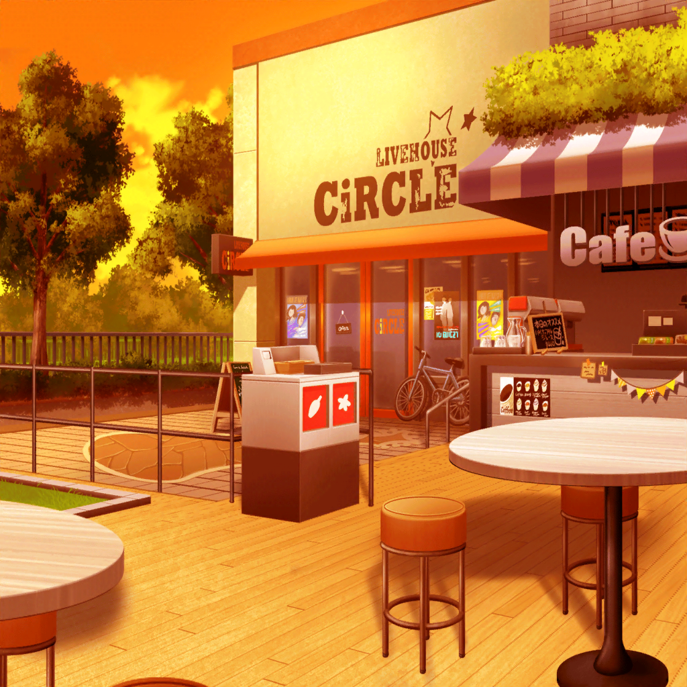

コンテスト当日
楽屋
コンテスト運営スタッフ
出場者のみなさん。
出番の5分前にはステージ袖で待機をお願いします！
コンテスト運営スタッフ
本コンテストは公開イベントです！
たくさんのお客様が見に来ていますが、
くれぐれも審査や運営情報の漏えいには注意を……
リサ
（紗夜と友希那の言ってた通り、
書類と音源審査はあっさりクリア……
でも、ここからが本当の本番……！）
リサ
ああっ、やばっ！！
メンテ用のスプレー……！
紗夜
忘れ物には注意って、連絡したじゃない。
——はい
リサ
あ……りがとう……
リサ
（紗夜……前にくらべてなんか、少しトゲがなくなった……？
それに……みんなも……）
あこ
りんりん大丈夫？ ステージ、すっごい大きいよっ。
いつかみたいに、真っ青になっちゃわない？？
燐子
うん……あこちゃん……
でも、わたし最近……気づいたの……
キーボードといると、守られてる気がして……
あこ
わかるわかるっ！
あこもドラム叩いてる時は無敵！
よーしっ。練習の成果、見せてやろうねっ
友希那
あこ。
他の応募者もいるんだから、あまり騒がないで
他の応募者１
……Roseliaってもっと
クールなバンドだって聞いてたけど……
なーんか意外と普通。拍子抜けだわ
他の応募者２
そう？ あたしはバンドって
仲いい方がいいと思うけど。
ねえ、それよりこれ、テレビ見てよ
紗夜・リサ
ーー！
他の応募者１
あ。Pastel＊Palettes。
まだ正式デビュー前なのにプッシュされまくりだよねー。
ギターとドラムの子は上手そうだけどさー
紗夜
（……だからなんだって言うの。
こっちはこっちで、やってやるわよ……）
紗夜
今井さん。スプレー終わった？ 私も使うから
リサ
えっ。あっ、うん……。はい
リサ
（日菜のことにも、紗夜、動じてない。
人混みが苦手な燐子も、……あこも楽しそうにしてる。
コンテスト前なのに……みんな、すごい……）
リサ
じゃあ友希那も……って、
あれ。友希那？

ライブハウス前
リサ
ちょっともぉ～友希那～！ みんなが
『友希那は本番前は誰よりも楽屋で準備する』
っていうから、超探しちゃったよ！
友希那
いくら準備しても、なるように、なるだけよ
リサ
ええ～？ ちょっと、
Roseliaのリーダーが投げやり発言っ？
友希那
練習は裏切らない。
どんな結果が出ても、それがすべてよ
リサ
友希那……
リサ
（ステージ慣れしてるから？
いや……FUTURE WORLD FES.に
一番思い入れがあるのは、友希那のはずなのに……）
友希那
なに。まじまじ見て
リサ
いやあ……なんか、さ。
スッキリした顔、してるなーって
友希那
……そうね。
なにも隠さないでいいって、こんな気持ちなのね
リサ
（よかった……。アタシのしたことは、
きっと間違ってなかったんだ……）
友希那
リサ。……ありがとう
リサ
そうだねっ☆
……って、えっ。
……え！？
友希那
時間。戻るわよ
リサ
ちょっと……、待って、今……！
リサ
（ダメだって……！ よりにもよって今、
友希那にそんなこと言われたら余計……っ）
楽屋
紗夜
５分前よ
友希那
問題ないわ。いつでも行ける。
——……リサ？
リサ
へぁえっ！？ う、うんっ！
だ、だだ大丈夫だよ～！ ははは！
友希那
リサ……
あこ
リサ姉……
前から思ってたけど、緊張……
リサ
し……ってないよーっ。
しってませーーーんっ！！
リサ以外全員
…………
スタッフ
Roseliaさん、お願いします
全員
はい！
リサ
（アタシは経験も、練習量も、圧倒的に足りない。
……もし、アタシが足手まといになったら、
みんなの今までの努力が……）
紗夜
ちょっと今井さん。
そうやってうつむいてたら、他の人に楽器があたって迷惑よ。
……ちゃんと前を向いて
リサ
——前、を……
リサ
（そうだ。ちゃんとこのステージに向き合わないと）
リサ
紗夜、ありが……
あこ
よしっ！ Roselia、行くぞーっ！ おーっ！
ほら、みんなでやろーよ！
燐子・リサ
おーっ
紗夜・友希那
やめて、そういうの

ステージ
紗夜
（なにかしら……この……
……私……
こんなに穏やかな気持ちになったこと……今まで……）
友希那
（……なにも考えられなくなっていく……
ただ、歌うことが……）
リサ
（た、楽しい……！！
ウソみたい！ アタシ、あんなに緊張してたのに！
……このバンド……）
あこ
（やっぱ……そうだよ！ Roseliaはもっと、
もっともっと、
カッコイイあこにしてくれる魔法をもってる……！！）
燐子
（……歓声も……ライトも……気にならない……
わたし……Roseliaでいるときは、
すこしだけ……強くなれるみたい……）